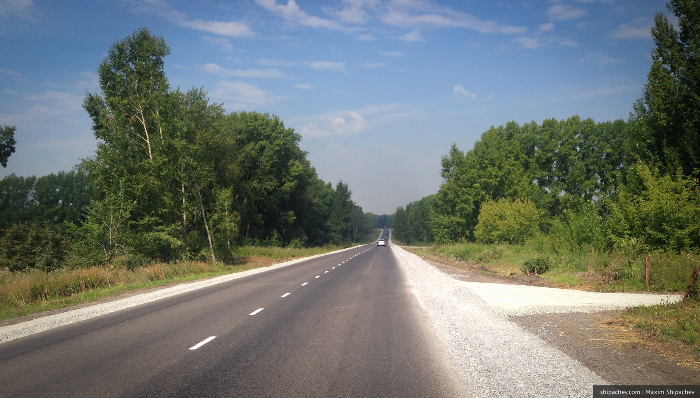

Сейчас пойдёт серьезный разговор. Просьба отойти от экранов несерьёзных читателей.
У тебя есть цель?
Любого масштаба: сбросить 3 килограмма, родить девочку, купить такое же, но с перламутровыми пуговицами, найти постоянную подружку, увидеть Париж, подтянуться 10 раз, а может быть даже рассчитаться за ипотеку. Напоминаю, что цель отличается от желания и мечты.
К цели ты двигаешься целе-направленно. Для исполнения желания и мечт достаточно просто желать и мечтать. Вообще можно больше ничего не делать.

Не бывает цели «выучить английский язык». Не бывает цели «путешествовать больше». Не бывает цели «разбогатеть». Всё это мечты.
Цель конкретна и достижима: «Пробежать марафон». Желание абстрактно и фантастично: «Выглядеть умнее всех в фейсбуке».
У тебя есть цель? Суеверный читатель может не обнародовать её, просто написав «да» или «нет».
Чувство собственной неполноценности тоже могу с тебя снять, написав, что на сегодняшний день никакой цели лично у меня нет.